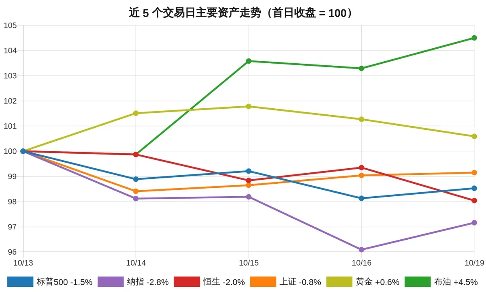

环球要闻卫报 / 彭博社 / 路透社 / 南华早报全球
伊朗袭击霍尔木兹海峡船只，布伦特原油逼近108美元
据卫报报道，过去10天伊朗在霍尔木兹海峡袭击了至少15艘集装箱船，部分遭无人机袭击，部分触雷。上周三一艘从巴基斯坦卡拉奇驶往阿联酋富查伊拉的货轮触雷沉没，21名船员全部撤离，船上2500个集装箱中数十个漂在海面。英国海事贸易行动中心称，截至周五的七天内共有12艘船遇袭。周一上午布伦特原油价格逼近每桶108美元。
2026-10-20 · 环球要闻 · 每日精选

以 5 个交易日前的收盘价为 100，比较股市、黄金与原油的累计涨跌：标普500−1.5%，纳指−2.8%，恒生−2.0%，上证−0.8%，黄金+0.6%，布油+4.5%。数据来源：Yahoo Finance（各市场按当地交易日收盘价）。
据卫报报道，过去10天伊朗在霍尔木兹海峡袭击了至少15艘集装箱船，部分遭无人机袭击，部分触雷。上周三一艘从巴基斯坦卡拉奇驶往阿联酋富查伊拉的货轮触雷沉没，21名船员全部撤离，船上2500个集装箱中数十个漂在海面。英国海事贸易行动中心称，截至周五的七天内共有12艘船遇袭。周一上午布伦特原油价格逼近每桶108美元。
法国总理勒科尔尼周二在社交平台表示，将在必要地区实施新的宵禁，由地方当局与市长协商决定。据半岛电视台报道，周六全法超过50万人上街，示威围绕生活成本和教育问题，随后演变为骚乱。意大利政府则宣布向米兰派遣500名士兵，此前抗议者与警察冲突、打砸商铺，米兰警方拘留271名年轻人。
英国国防部周二发表声明，将部署皇家空军台风战斗机为沙特阿拉伯执行防御性空中任务，保护其城市和关键国家基础设施免受也门胡塞武装的空中袭击。声明强调战机仅承担防御角色，不会对胡塞武装发动进攻性打击。英方还将延长为沙特战机提供的空中加油支持90天，并派出军事顾问和A400M运输机。国防大臣斯特里廷称，这是对胡塞武装近期升级行动的回应。
据卫报报道，胡塞武装用弹道导弹袭击也门南部舍卜瓦省al-Alam营地，造成至少53人死亡、200多人受伤，多为年轻新兵，是9月内战重燃以来单次伤亡最惨重的一次。美联社称死亡人数升至60人。也门政府总统阿里米称遇难者为新招募人员，并致电联合国秘书长古特雷斯，要求将胡塞武装列为外国恐怖组织。
美国特使威特科夫已抵达挪威，将与乌克兰总统泽连斯基会谈。挪威首相斯特勒称，泽连斯基请求奥斯陆和芬兰在“乌克兰的关键时刻”组织此次会晤。会前美国国务卿鲁比奥驳斥美方扣留情报导致乌克兰人丧生的说法，称其“可耻”“令人愤慨”。此前泽连斯基的军事技术顾问向BBC表示，缺乏可靠的美方预警造成生命损失。
加拿大阿尔伯塔省选民在公投中否决启动脱离加拿大的进程。据阿尔伯塔选举局非官方结果，在已统计的逾150万张选票中，76%支持留在加拿大，近24%支持启动分离程序。总理卡尼表示“阿尔伯塔人作出了明确选择”，他们选择了团结。省长史密斯称，选民支持在一个统一的加拿大中建设更强大的阿尔伯塔。分离运动人士威尔逊称，至少四分之一的阿尔伯塔人认为本省应得到更好对待。
澳大利亚独立议员海恩斯在维多利亚州旺加拉塔遭汽车撞击，失去一条腿，周二仍在墨尔本阿尔弗雷德医院重症监护，医生正努力保住另一条腿。警方称，43岁男子纽金特被控危险驾驶致严重伤害、故意致严重伤害等罪名，周三出庭。内政部长伯克引述目击者称，司机掉头后将海恩斯撞向一辆车，倒车后又撞了第二次。总理阿尔巴尼斯称当局认为袭击是蓄意的。
肯尼亚法院裁定，饥饿邪教头目麦肯齐及约30名同案被告谋杀罪名成立，涉及190名儿童和1名成人死亡。麦肯齐2023年被捕，此后当局在沿海沙卡霍拉森林的浅坟中陆续发现遗体，累计超过400具，仅26具得以确认身份。法官莫查切在超过8小时的庭审中表示，部分儿童被隔离并断食，其父母在场旁观。麦肯齐否认强迫受害者挨饿，但被法院驳回。
据卫报报道，美国国土安全部周一发布通知，要求政府机构停止使用中国初创企业深度求索（DeepSeek）的人工智能工具，以及第三方基于其模型开发的产品，并从信息技术设备中移除。通知称，其模型存在多重威胁，员工或承包商使用可能导致敏感数据流向中国。BBC称，该禁令适用于文职政府机构。美联社报道，中国方面为DeepSeek作出辩护。
谷歌云在英国的云服务周二发生故障，导致法院和银行系统大面积受影响。谷歌将伦敦云计算业务“europe-west2-b区”的故障归因于一次“电力事件”，称服务自伦敦时间下午1时起逐步恢复。英格兰和威尔士法院远程出庭的视频系统整个上午无法使用，多个庭审被推迟。劳埃德、汇丰和Revolut的用户无法付款或转账，英国金融行为监管局表示正与谷歌联系。
据CNA报道，周一巴黎和米兰股市领跌欧洲主要股指，法国暴力升级与意大利金融中心街头冲突引发市场担忧。彭博社称，美股方面人工智能交易反弹势头受挫，一家韩国数据中心企业上市首秀惨淡，重新引发对人工智能支出热潮能否持续的担忧，美国国债因避险需求上涨。路透社称，油价维持高位之际股市再度下滑，市场关注人工智能企业财报。
据卫报报道，法国债券和股票市场遭遇新一轮抛售，此前周末的暴力抗议导致数千人被捕、公共建筑被焚、数百家商铺遭洗劫。周一法国十年期国债收益率一度上升16个基点至4.94%，接近24年高位，法德十年期借贷成本之差逼近14年来最高。两年期收益率上升9个基点至3.64%，欧元兑英镑跌至17个月低点。高盛分析师称，法国财政挑战比2011至2015年时更难。
英国国家统计局数据显示，截至8月的三个月失业率从4.9%降至4.7%，而城市经济学家此前预测升至5%。8月至9月领取工资的雇员增加1.3万人，达3030万。截至9月的三个月职位空缺减少2.1万个至69.1万个，为2021年以来最低。剔除奖金后的平均工资增幅从3.6%升至3.7%。数据公布后英镑兑美元上涨约半个美分至1.3352美元。
印度富豪穆克什·安巴尼旗下的Jio Platforms周三起在股市挂牌，拟募资至多3020亿卢比，目标估值10.3万亿卢比，有望成为印度史上最大IPO。发行价区间为每股1065至1119卢比，最多发行2.7亿股，周五截止。周一已锁定212家锚定投资者，包括贝莱德、新加坡政府投资公司和阿布扎比投资局等。
据金融时报报道，印尼将部分关键股票剔除出相关指数，以抵御明晟（MSCI）的降级威胁，这家全球指数提供商已多次对东南亚最大经济体的可投资性提出关切。路透社称，印尼正努力稳定市场，此前明晟发出将其剔除的威胁。南华早报报道，印尼官员承诺推进改革以缓解担忧。
换个词，再找找。